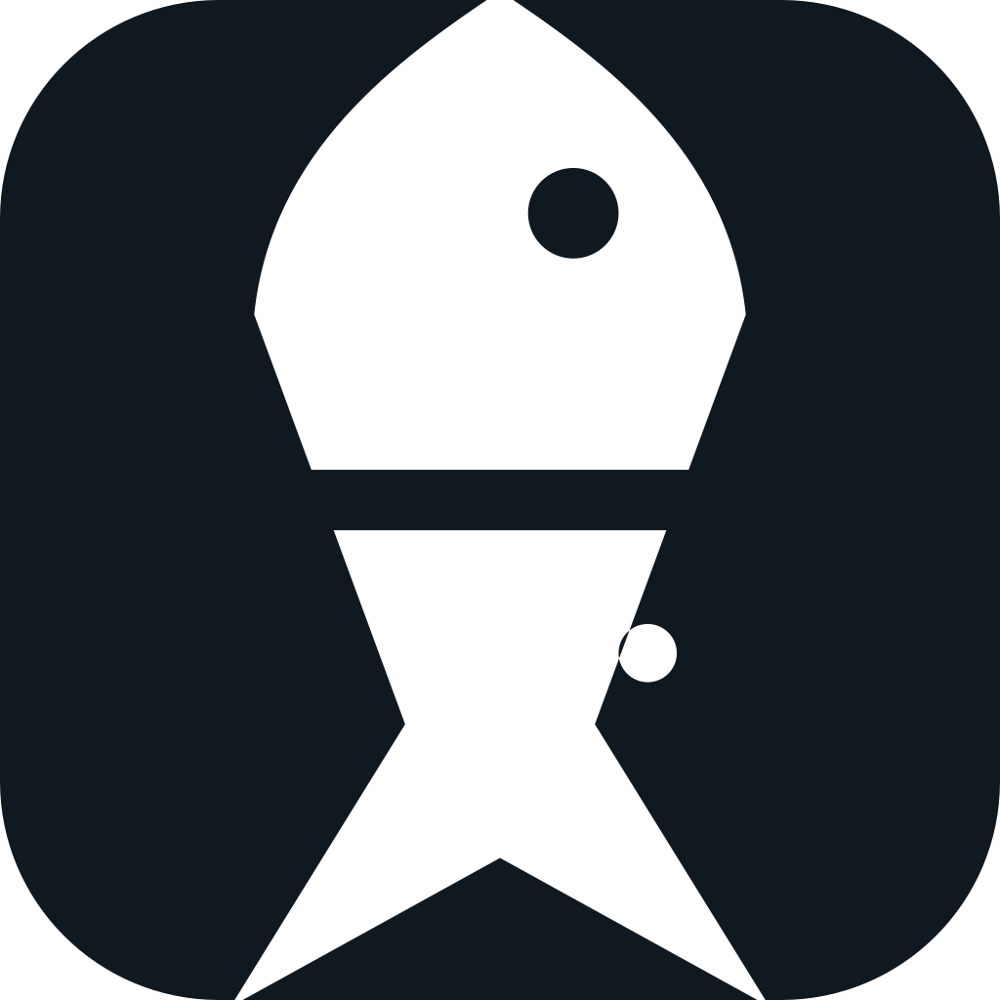
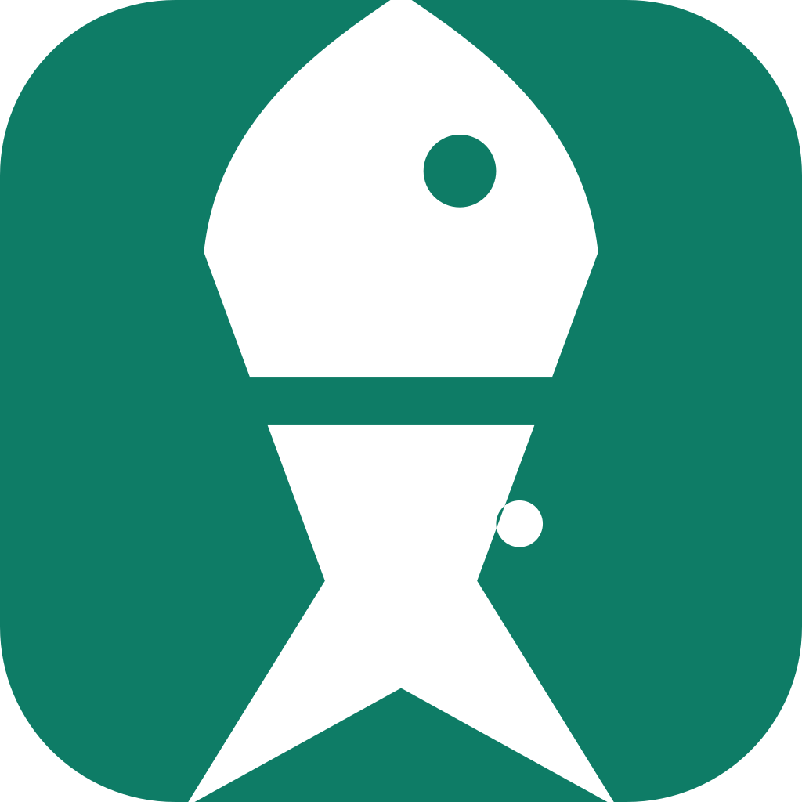
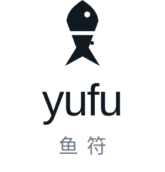

yufu
企业统一身份与 SSO 平台
鱼符
yufu
分开是凭证，合起来才是身份
鱼符
01 · 主标三态（竖鱼，无印框）
单色
· 主用形态 · 头在上、尾叉在下，中缝横贯
logo-mark.svg / logo-mark-reverse.svg
双色合符
· 上半玉、下半墨
logo-mark-duplex.svg
深色底
· 玉提亮 + 反白
logo-mark-duplex-reverse.svg
02 · 尺寸阶梯（按真实像素渲染，保持比例）
16
24
32
48
64
96
主标是非正方形画板（35 × 66，约 1 : 1.9）。排版时给高度、宽度自适应，不要写死宽高，否则鱼会被压扁。
03 · 应用图标（同一条竖鱼，反白入墨印）
favicon 单独优化
定版
去眼与穿绳孔、中缝加宽到 4.6、鱼身放大 1.30 —— 这三步是逐版试 16px 定出来的。
16
32 · 简化版

64
96

96 玉印
竖版字标组合
鱼在上、字标紧随、中文最后 —— 对外物料、海报、启动画面用。

04 · 字标字体（Futura 定版，三者均已配竖鱼）
yufu
Futura Medium · 定版
— 纯几何，科技感强
yufu
Avenir Next Semibold · 备选
yufu
Gill Sans · 备选
05 · 色板
墨
#101820
玉（主色）
#0E7C66
玉·暗底
#3FC7A4
朱（点色）
#B4382C
纸
#F2F5F8
石灰
#6B7784
06 · 应用示意
yufu
企业统一身份与 SSO 平台
账号
密码
登 录
yufu
账户中心
开发者控制台
企业管理
审计日志
yufu · 鱼符 — 唐代官员随身佩带的身份凭证，一分为二、合而验之；金、银、铜三品对应不同权级。
标志语言：一条竖向的几何鱼符，中缝横贯。分开是凭证，合起来才是身份。